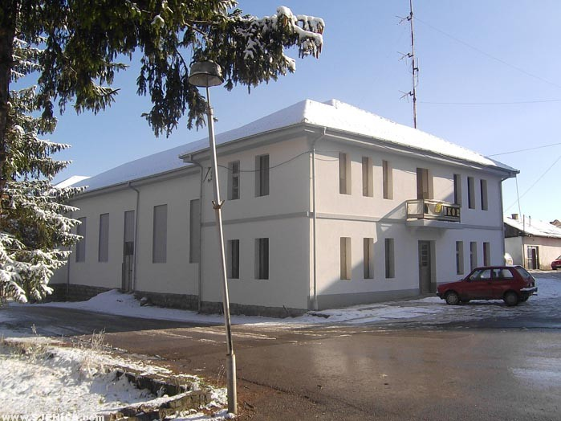

Back in 1928., Sjenica, as a small settlement, was known for its enthusiastic people who made the history of a nation a cultural activity.
In 1936, the Falcon's home was built, which was reconstructed in 1950. House of Culture.
During the year, the Cultural Institution is the organizer of many cultural and artistic events that bring together over 9,000 visitors to 60 programs and 1,000 movie screenings, noting that many of our citizens and guests enjoy attending outdoor programs.